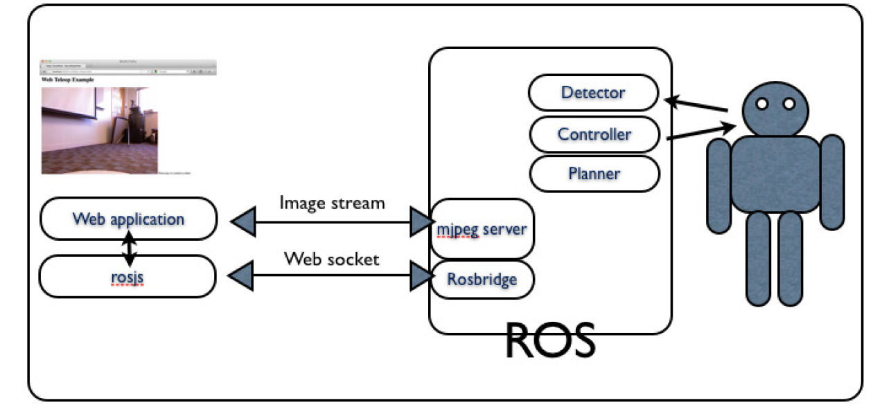
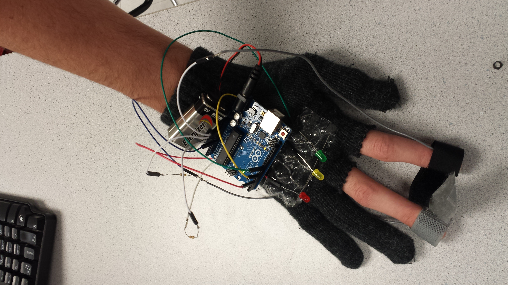

Projects
TurtleBot with PhantomX Pincher Robot Arm


Augmented Reality Remote Arm Controller - Codename: Gatlin
The camera on the back of the mobile device captures the user's hand pose while the screen displays the calculated
location of the hand overlaid on top of the 3D view from the Kinect on the robot. The mobile device's screen
acts like a window into the robot's perspective. The mobile device's gyroscopes allow precise tracking of orientation, and utilizing the gyroscopes makes the app much more immersive
since when you turn the mobile device, the view rotates accordingly. The arm's end effector would then copy the pose of the user's hand, allowing the user to reach
for an object and grasp it as if the user was standing where the robot is. The pros of this method is that only a mobile device
with a camera is needed to capture hand movements. Thus this will allow the robot controller to be packaged in a app and anyone with a smartphone
could then download it to their phone and control the robot remotely. (security authentication will be added so not just anyone can access the robot)
Although I have just begun to experiment with Unity and ROS, the combination seems to have many possibilities and applications.
Here is a short video demo of an initial prototype for the robot's Android controller app, showing a visualization of the RGBD data from the
Kinect, joystick controls for moving the robot, and gyro controls for viewing the 3D pointcloud.
Partners: Zach Zweig-Vinegar (zzv2), Isaac Qureshi (iaq3)
The mobile app was created using Unity and the Unity-ROS connection was implemented using the ROS packages "rosbridge" and "web_video_server". Here is a schema for another ROS web interface that we used as a guide during the beginning of this project.
Click here to read more...
Stress Detector Glove (Galvanic Skin Response)
Team Members: Zach Zweig-Vinegar, Fred Kummer
Final class project for ENGRI 1820: Electricity Lights Camera Action: Nanoengineering for the Future of Bits and Bytes.
It is a simple lightweight stress sensor that fits around the wrist
which senses your stress level using heart and galvanic skin response
and indicates it with an LED of different colors. This could certainly
be useful to an ordinary person as a way of tracking everyday stress,
but also has potential medical applications, allowing doctors and patients
to quickly and easily determine the patients stress level, which would
be useful in managing a variety of illnesses from heart disease to anxiety disorders.
It was created by taking advantage of the fact
that the sensors and microcontrollers needed already exist and are easily accessible.
This allowed us to focus on integrating them into a functioning system rather
than worrying about the specifics of each sensor and to devote more time to the
problem of accurately interpreting the data and making them work as flexible electronics.
Resources: A tessellated surface that can fit around the wrist, an Arduino
microcontroller that can be used to interpret the data, a heart rate or pulse sensor,
a galvanic skin response sensor or the materials needed to construct one
(a fairly simple operation that mainly requires a conductive surface and an Arduino
to regulate the data), multicolored LEDs to indicate your stress level, batteries, and wire.
Arduino Thermistor Data Collector
Click to enlarge...
Click to download the sourceforge code...

This project utilizes a program that allows the user to easily collect temperature data from inexpensive thermistor temperature sensors connected to the computer through an Arduino. Contains a Java UI for the Arduino USB serial connection. Converts the voltage through the thermistor into a temperature. Allows the user to set the duration and sampling rate for the data collection. Provides real-time graphs of data... README
This program was included in a research paper entitled "Autonomous Thermal Data Collection" and presented
at the 44th Lunar and Planetary Science Conference (LPSC) in Huston, Texas.
All LPSC 2013 Mars Outreach for North Carolina Students Posters
Websites
CS 1300 Final Project - Ithaca Physics Bus

Partners: Victoria Beall, Bryan Rhodes, Logan McManus
"For this project, our client is a small company called Physics Bus, founded by Erik Herman. Physics Bus is a refurbished old style bus that travels to schools and events as a mobile physics exhibit. The mission of Physics Bus is two fold: first, to spark interest in physics and science in audiences of all ages through fun and interactive exhibits, emphasizing the artistic and creative aspects of physics rather than straight equations; second, the exhibits in the bus are made from also entirely recycled and/or junk materials. The current URL for the Physics Bus site is http://ithacaphysicsfactory.weebly.com/ (physicsbus.org), but our client has expressed his unhappiness with the overall theme, color scheme, and even logo of the site (which is just a slightly modified version of the logo for the parent organization, Physics Factory). What our client was looking for in their site was something that embodies the fun and interactive elements of their project. In particular, our client mentioned that he likes the look of hero images and requested a slideshow on the website's main page. He was also looking for a site that effectively uses social media, blogging, and videos/images to give users a taste of what the Physics Bus is like."
CS 2300 Final Project - Ma-Maria

Partners: Jarrod Ashley, Keshav Varma, Robert Oxer
"Our client is Ada Chan, an MBA candidate at Cornell. She is the founder of a company that intends to create an online solution to
match part time cleaners with customers (for the purposes of this project we may decide to focus on the Ithaca area). The website we
built is intended to be an alpha version of the company's final product and will mostly be used for product demos to potential
investors...
The website's main purpose is to connect customers who need household cleaning services with providers
in their local area. The content will reflect this purpose as well as make it as easy to use as possible.
We plan to incorporate many features, so it should be very simple to facilitate communication between
customers and cleaners. This will ensure that target audience enjoys this service as much as our client does."
- Assignment Description
- Design Journey Map
CS 2300 Project 3 - Image Album

This image gallery will be used to host professional pictures of me and my CS projects, so I want to reflect the coding aspect in the look and feel of my design. I used a black background because it adds more contrast to the text and most people associate black backgrounds with computer consoles or terminals. I also wanted the website to feel sleek and modern, just like the iOS and Android operating systems which is why I incorporated large icons and a CSS flip for interaction...
CS 2300 Project 2 - Music Library

This music library was my first website made using a database and it actually uses a text file to save data. You can filter your music by mood with tags to find a perfect song for any time of day. You can also search by Title, Artist, Album, Year, Rating or a combination. Simply change a search parameter to get a list of matching tracks...
Oculus Rift

Last updated 18th September 2015